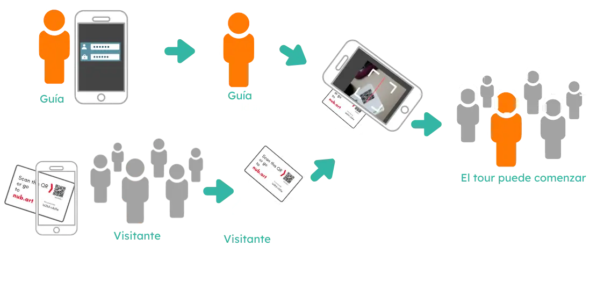

Guía a tu grupo mediante smartphone e Internet
¿Guías a un grupo en un entorno ruidoso? ¿O en un lugar que requiere hablar en voz baja?
¿Te ha intimidado el precio de un sistema inalámbrico de guiado de grupos tradicional?
Nubart® Live es lo que necesitas. Es una solución económica, basada en Internet, que funciona sin problemas en los teléfonos móviles de los miembros del grupo, sin necesidad de descargar una aplicación. Nubart Live es extremadamente fácil de usar, incluso para los no nativos digitales.
Una tarjeta con un código QR permite la conexión entre los visitantes y el guía turístico. Su smartphone actúa como transmisor y los smartphones de los visitantes como receptores. Así de sencillo
Hay una forma mejor de guiar grupos, sin equipos aparatosos
Sistemas de radioguía tradicionales
- Las radioguías deben limpiarse después de cada uso
- Equipos caros de comprar, alquilar o mantener
- Los visitantes internacionales se sienten excluidos
- Poca flexibilidad para visitas ocasionales
- Pilas, recargas y logística necesarias
Nubart LIVE
- Sin apps que instalar ni equipos que desinfectar
- Tus visitantes solo escanean un código, sin complicaciones técnicas
- Traducción con IA opcional en más de 35 idiomas
- Preguntas silenciosas para visitas más fluidas
- Compra única de tarjetas, sin almacenaje de dispositivos
Desde 154 € (pago único, sin suscripciones) · Ver precios completos →
Cómo funciona Nubart Live - Principio básico

¿Quieres ver cómo funciona Nubart LIVE en tus visitas?
Solicita un kit de prueba gratuito
Por qué cada participante recibe su propio código
A diferencia de los sistemas con código QR compartido o PIN, en Nubart LIVE cada persona recibe un código de acceso propio e intransferible.
Inicio inmediato: Sin aglomeraciones alrededor de un único dispositivo. Cada participante escanea su propio código y todos se conectan a la vez.
Independencia y tranquilidad: ¿Perdiste la conexión? Solo vuelve a escanear, sin interrumpir el recorrido ni necesitar la ayuda del guía.
Control total para el guía: Solo los participantes invitados tienen acceso. Sin oyentes no deseados ni solapamientos con otros grupos.
Más sencillo imposible
¿Para qué comprar radioguías cuando todo el mundo tiene un smartphone?
Fácil de usar
Tanto los visitantes como el guía escanean el código QR de las tarjetas. ¡Listos! No es necesario registrarse ni descargar una aplicación. (Tan solo el guía debe iniciar sesión).
Asequible
Nuestro paquete básico con 500 tarjetas cuesta menos que alquilar un equipo de radioguías. Con 500 tarjetas tendrás suficiente para muchas visitas.
Anónimo
Tus visitantes no tienen que facilitar ningún dato personal para utilizar Nubart Live. ¡Es completamente anónimo!
Traducción por IA
¿Guías a un grupo multilingüe? ¡No hay problema! Solo tienes que añadir nuestra función de traducción en vivo y todos podrán seguir la conversación, independientemente de su idioma materno.
Saber más
Con opción de preguntas
Tus visitantes pueden preguntar al guía en cualquier momento sin interrumpirle: El guía puede acceder a la lista de preguntas y responder cuando lo vea oportuno.
Fácil de transportar
Un maletín de radioguías tradicionales es pesado de transportar y tentador para los ladrones. ¡No así nuestras tarjetas!
Higiénico
Las radioguías deben desinfectarse después de cada uso. ¡Nuestras tarjetas no!
Ecológico
Los dispositivos generan basura electrónica. Nuestras tarjetas se imprimen en cartón FSC con compensación de CO2.
Consulta los casos de uso de Nubart Live
Casos de uso

Visitas a fábricas y plantas
Muestra
tu fábrica a tus visitantes sin gastar demasiado:
Utilizando simplemente el
micrófono del smartphone, Nubart Live es ideal para visitas guiadas en entornos ruidosos
como una planta.

Rutas por la ciudad
Nubart Live es un sistema
sencillo y asequible para viajes de estudios y rutas urbanas:
La voz del guía se
oye bien a pesar del tráfico, y no importa si los participantes se alejan del guía.

Accesibilidad para personas con discapacidad auditiva
Con Nubart Live puedes ofrecer visitas guiadas más inclusivas:
Las
personas von problemas de oído pueden oír mucho mejor empleando un smartphone con
auriculares, ya que les aísla del ruido de fondo y permite ajustar el volumen.
Perfecto para visitas a fábricas y plantas
Supera los retos de las visitas a fábricas
El ruido de los entornos de producción dificulta la comunicación. Los sistemas de radioguía tradicionales son caros de comprar o alquilar, requieren un mantenimiento constante y no pueden manejar fácilmente grupos multilingües.
Por qué las fábricas eligen Nubart LIVE:
- Supresión del ruido: empleando un micrófono USB unidireccional para el guía se obtiene un audio nítido incluso en plantas ruidosas.
- Formación e incorporación de empleados: forma a empleados internacionales en su lengua materna
- Privacidad de los visitantes VIP: participación anónima, perfecta para visitas confidenciales
- Sin restricciones de frecuencia: funciona a nivel mundial a través de Internet, a diferencia de los sistemas de radio con licencia
- Uso ocasional: perfecto para visitas espontáneas de inversores, no para visitas diarias
Casos de uso habituales en fábricas:
- Visitas de inversores y partes interesadas
- Orientación para nuevos empleados y formación en seguridad
- Visitas de clientes a la planta
- Demostraciones en ferias comerciales

¿Organizas visitas a la fábrica?
Solicita un kit de prueba gratuito para probarlo en el entorno de tu planta.
Solicita un kit de prueba gratuitoInterpretación simultánea con IA opcional
Traducción simultánea opcional con inteligencia artificial

¿Realizas visitas guiadas con visitantes internacionales? Con nuestro complemento de IA opcional, un solo guía puede ahora atender a un grupo multilingüe sin necesidad de contratar intérpretes.
Nuestro complemento de traducción IA opcional funciona perfectamente con Nubart LIVE:
- Los participantes escanean su código QR y seleccionan su idioma preferido entre más de 35 opciones
- Pueden escuchar en el idioma original para oír la voz natural del guía
- O recibir la traducción IA en tiempo real como texto y audio en su pantalla
- Las preguntas se traducen automáticamente si los participantes escriben en su propio idioma
Una sola visita. Varios idiomas. Sin necesidad de guías adicionales.
¿Necesitas traducción con IA para un evento en lugar de una visita guiada?
Visita Nubart TRANSLATE, nuestra solución para conferencias, congresos y eventos corporativos.
Demo de Nubart LIVE con add-on de traducción simultánea
Reproduce el vídeo con sonido
Precios y Calculadora de Costes
Precios simples y transparentes. Calcula tu presupuesto en segundos.
Tarjetas con código QR
Compra única · guías ilimitados · sin suscripciones

PDF · recortar y usar
Entregado en máx. 1 día
+ €1,50/código · mín. 50

500 tarjetas de cartón preimpresas
Enviado en 2-3 días

3.000+ tarjetas · tu marca
Enviado en 30 días
descuentos por volumen
Add-on de Traducción IA
- Más de 35 idiomas, audio y texto en tiempo real
- Precio por stream del guía, no por idioma
- Oyentes ilimitados — sin tarifa por participante
- Solo se factura mientras el guía habla con la traducción activa
- El guía puede activar/desactivar la traducción cuando quiera
Biblioteca Multimedia
Los guías envían contenido multimedia a las pantallas de los participantes mediante control remoto. Una biblioteca por ruta.
Tu estimación de costes
Calcula tu presupuesto de Nubart LIVE en pocos clics
Paso 1 de 4
¿Qué paquete de tarjetas necesitas?
Paso 2 de 4
¿Necesitas una biblioteca multimedia?
Una biblioteca multimedia permite al guía enviar imágenes, vídeos o documentos a las pantallas de los participantes durante el tour mediante control remoto. Puedes crear una biblioteca diferente para cada ruta.
Paso 3 de 4
¿Necesitarás el add-on de traducción IA?
Traducción en tiempo real en más de 35 idiomas. €39 por hora de stream (por guía con traducción activa).
¿Es la primera vez que usas la traducción IA de Nubart LIVE?
Tu estimación
Resumen de costes
Tu solicitud de presupuesto está lista
Copia el texto de abajo y pégalo en tu cliente de correo, o usa el botón Abrir en la app de correo si tienes una configurada.
¿Preguntar al guía? Ningún problema
La mayoría de los sistemas estándar de guiado de
grupos (radioguías) no permiten a los visitantes hacer preguntas.
Algunos son
bi-direccionales y permiten que el participante haga una pregunta que escuchará todo el
grupo. Los participantes tímidos raramente harán uso de esta opción, mientras que los
más atrevidos pueden interrumpir la visita con preguntas interminables, restando valor a
toda la experiencia.
Nubart Live ofrece una solución no invasiva en la que las preguntas se acumulan en el
smartphone del guía para que pueda responderlas en el momento oportuno.
Si has adquirido el módulo de traducción simultánea, las preguntas se traducirán
automáticamente.
Participante

Guía

Confían en nosotros


Preguntas frecuentes
Preguntas frecuentes
Primeros pasos
Durante el recorrido
Si esto ocurre, simplemente entrega una de esas tarjetas ya escaneadas a la persona que se haya retrasado Eso es todo: esa persona podrá unirse al grupo inmediatamente, simplemente escaneando el código QR.
Una vez que cierres el grupo, podrás reutilizar esas tarjetas adicionales para la próxima visita. Las tarjetas dejan de ser transferibles una vez que las haya escaneado un participante, no cuando las escanea el guía.
La latencia se ve afectada por el rendimiento del smartphone, la calidad de la conexión y si los participantes utilizan el mismo proveedor de datos móviles.
Sin embargo, si el guía habla en voz baja, la latencia apenas se nota: los participantes oirán principalmente la voz amplificada de su smartphone en lugar del eco de la voz natural del guía.
El grupo permanecerá conectado, pero en espera mientras hablas. Cuando termines la llamada, vuelve al navegador. Si algunos participantes muestran una luz roja en lugar de verde, pulsa «reload» (recargar): todos se volverán a conectar sin necesidad de volver a escanear sus códigos QR.
Nota: En Android, si olvidas silenciar antes de responder, los participantes pueden oír tu parte de la conversación. En iPhone, no oirán nada.
Más información sobre el uso de Nubart LIVE en un viaje.
Complemento de traducción con IA
Consulta nuestras instrucciones para obtener más información.
Aunque Google Translate puede reproducir fragmentos de audio cortos, no está diseñado para proporcionar una transmisión de audio de forma continua. Cada visitante tiene que manejar la aplicación individualmente, encender y apagar el micrófono, activar la reproducción y leer el pequeño texto que aparece en su pantalla. El tiempo, las interrupciones y los retrasos varían de una persona a otra, lo que rápidamente genera confusión en un entorno grupal.
Nubart LIVE está diseñado específicamente para visitas guiadas y visitas a fábricas. Un guía habla una vez por el micrófono y todos los participantes reciben la misma transmisión de audio sincronizada en sus propios teléfonos inteligentes, sin necesidad de descargar ninguna aplicación.
Con el complemento opcional de traducción por IA, la traducción se vincula directamente a la transmisión de audio en directo del guía. Los participantes solo tienen que elegir su idioma preferido y seguir la visita juntos, en lugar de que cada persona utilice una aplicación de traducción independiente.
En resumen: Google Translate es ideal para uso individual; Nubart LIVE está diseñado para experiencias guiadas compartidas y sincronizadas.
Detalles técnicos
Sin embargo, esto no afecta a los miembros del grupo: para ellos, la carga de la batería no es mucho mayor que cuando escuchan un podcast o un audiolibro. Por ejemplo, una hora de uso continuo consume el 8 % de la batería de un teléfono Android de 4 años.
Nubart LIVE funciona con cualquier dispositivo hotspot estándar y cualquier tarjeta SIM; tienes libertad para elegir el hardware y el plan de datos que mejor se adapten a tu presupuesto y destino. Este enfoque es especialmente útil cuando tu grupo incluye visitantes internacionales que pueden enfrentarse a cargos por roaming, cuando las visitas se realizan en zonas con cobertura móvil deficiente, o simplemente cuando quieres garantizar una conexión estable independientemente del plan o del operador de cada participante.
Si realizas visitas de varios días o grupos grandes con traducción activa, te recomendamos dimensionar tu plan de datos en consecuencia, o simplemente optar por una tarifa ilimitada, que normalmente cuesta solo unos pocos euros más y elimina cualquier preocupación por quedarse sin datos a mitad de la visita.
Tarjetas
Tú nos envías las imágenes, logotipos y otros elementos que deseas incluir en tu tarjeta y nuestro diseñador creará varias propuestas de diseño entre las que podrás elegir.
Consulta nuestros precios para Nubart LIVE
Si prefieres que tus tarjetas tengan un diseño personalizado, el pedido mínimo es de 3000 unidades. Consulta nuestros precios para Nubart LIVE
Sin cuellos de botella al inicio del tour: En lugar de 25 personas haciendo cola para escanear una pequeña pantalla de móvil, cada participante escanea su propia tarjeta de forma independiente. El guía incluso puede pre-escanear las tarjetas antes de distribuirlas, formando el grupo con antelación.
Recuperación de sesión: Los turistas abandonan constantemente su navegador para hacer fotos, revisar mensajes o usar otras aplicaciones. Con un código digital compartido, pierden la conexión y tienen que interrumpir al guía. Con una tarjeta Nubart LIVE, simplemente vuelven a escanear y se reincorporan al instante, sin necesidad de la ayuda del guía.
Control de acceso: A diferencia de los sistemas donde cualquiera que conozca un PIN o vea un código QR puede unirse, Nubart LIVE le da al guía control total sobre quién está en el grupo. Sin oyentes no invitados, sin confusión entre grupos de visita superpuestos en el mismo lugar.
¿Necesita una opción sin tarjetas para eventos espontáneos o puntuales? Pregúntenos por nuestras hojas de códigos QR imprimibles: los mismos códigos únicos, listos en minutos.
Precios
¿Listo para transformar tus visitas en grupo?
Prueba Nubart LIVE sin compromiso. Obtén un kit de prueba con 30 minutos de traducción por IA gratis.
Solicita un kit de prueba gratuitoSin tarjeta de crédito Soporte completo durante la prueba